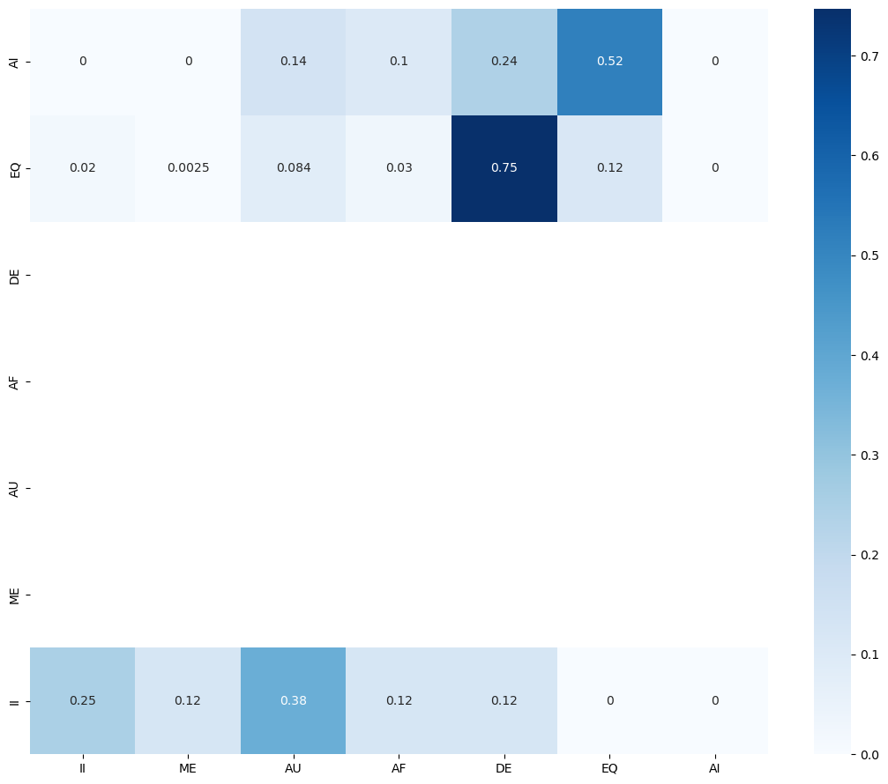

from transformers import AutoModelForSequenceClassification, AutoTokenizer
import pandas as pd
from datasets import Dataset,DatasetDict,load_dataset
import torchEvaluating Model
cleaned_data = "../data/cleaned-data"Define kfold for evaluation
kfold = 1Load Evaluation Dataset
val_dataset = pd.read_csv(f'{cleaned_data}/val/FAA-{kfold}.csv',header=0)Import fine-tuned model
model_path = '../output/model'
model = AutoModelForSequenceClassification.from_pretrained(model_path)
tokenizer = AutoTokenizer.from_pretrained(model_path)text = val_dataset.textpredictions = []
actual_predictions = []
for row in text:
inputs = tokenizer(row, return_tensors="pt")
with torch.no_grad():
logits = model(**inputs).logits
predictions.append(logits)
actual_predictions.append(logits.argmax().item())Visualizations
import numpy as np
import matplotlib.pyplot as plt
import seaborn as sbPrediction Heat Maps
Count correct predictions and add to heat map
correct = 0
heat_map = np.zeros((7,7), dtype=float)
for index, label in enumerate(val_dataset.label):
if label == actual_predictions[index]:
correct += 1
heat_map[6 - actual_predictions[index]][label] = heat_map[ 6 - actual_predictions[index]][label] + 1
print("Correct based on my actual predictions: ", correct/len(actual_predictions))Correct based on my actual predictions: 0.11136363636363636Normalize heat map
for i, category in enumerate(heat_map):
total = 0
for val in category:
total = total + val
for j, val in enumerate(category):
heat_map[i][j] = val / totalPlot heat map
fig, ax = plt.subplots(figsize=(11,9))
fig.set_tight_layout(True)
# color map
labels = ['II','ME','AU','AF','DE','EQ','AI']
y_labels = ['AI','EQ','DE','AF','AU','ME','II']
sb.heatmap(heat_map,cmap="Blues",xticklabels=labels, yticklabels=y_labels, annot=True)<AxesSubplot:>
fig.savefig(f'../output/visualizations/heatmap-{kfold}.pdf')